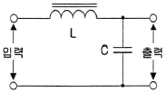
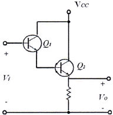
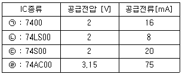
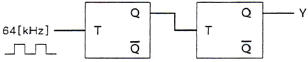
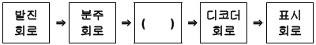
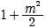
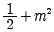
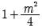
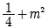
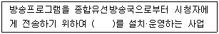

방송통신산업기사 (2013-10-12 기출문제)
1과목: 디지털 전자회로
1. 제너다이오드에서 제너전압이 10[V], 전력이 5[W]인 경우 최대전류의 크기는?
- 0.⑤[A]
- 0.5[A]
- 0.⑤[mA]
- 0.5[mA]
(정답률: 85%)

2. 다음 중 3상 반파 정류회로의 설명으로 알맞지 않은 것은?
- 변압기의 이용률이 좋다.
- 출력 전압의 맥동 주파수는 전원 주파수의 3배이다.
- 부하 정류 전류는 다이오드 1개에 3배의 전류가 흐른다.
- 직류분에 대한 맥동률은 작으나 전압 변동률은 단상보다 크다.
(정답률: 90%)
3. 다음 그림과 같은 초크 입력형 평활회로에서 출력측의 맥동 함유율을 작게 하려고 할 때 적합한 방법은?

- L과 C를 모두 크게 한다.
- L과 C를 모두 적게 한다.
- L을 크게 C를 작게 한다.
- C을 크게 L을 작게 한다.
(정답률: 85%)
4. 다음 중 트랜지스터 증폭회로에서 부궤환을 걸었을 때 일어나는 현상이 아닌 것은?
- 안정도가 좋아진다.
- 비직선 일그러짐이 적어진다.
- 주파수 특성이 개선된다.
- 대역폭이 감소한다.
(정답률: 89%)
5. 다음 회로의 설명으로 틀린 것은?(단, hfe1=Q1의 순방향 전압 증폭률, hfe2=Q2의 순방향 전압 증폭률)

- 트랜지스터 Q1과 Q2는 Darlington 접속이다.
- 전류증폭률은 (1+hfe1)(1+hfe2)이다.
- 입력저항이 대단히 높고 출력저항은 낮다.
- 전압이득이 1보다 크다.
(정답률: 92%)
6. 다음 중 그 값이 작을수록 좋은 것은?
- 증폭기 바이어스 회로의 안정계수
- 차동증폭기의 동상신호 제거비(CMRR)
- 증폭기의 신호대 잡음비
- 정류기의 정류효율
(정답률: 75%)
7. 다음 중 가장 효율이 좋은 증폭방식은?
- A급
- B급
- C급
- AB급
(정답률: 100%)
8. 다음 중 수정발진기에서 주파수 변동이 일어나는 주 원인이 아닌 것은?
- 주위 온도의 변화
- 부하의 변동
- 전원전압의 변동
- 동조점의 안정
(정답률: 72%)
9. 다음 중 무선송신기의 발진기 조건으로 잘못된 것은?
- 주파수 안정도가 높을 것
- 고조파 발생이 적을 것
- 부하의 변동에 영향이 클 것
- 주파수의 미세조정이 용이할 것
(정답률: 77%)
10. 진폭변조에서 반송파 전압이 5[V], 신호파 전압이 2[V]인 경우 변조도(m)는?
- 10[%]
- 20[%]
- 40[%]
- 60[%]
(정답률: 74%)
11. 다음 중 디지털 변복조 방식에 해당하지 않는 것은?
- ASK
- FSK
- SSB
- QAM
(정답률: 90%)
12. 다음 중 멀티바이브레이터에 대한 설명으로 틀린것은?
- 부궤환으로 동작한다.
- 회로의 시정수가 주기로 결정된다.
- 출력에 고차의 고조파를 포함하고 있다.
- 전원전압이 변동해도 발진 주파수에는 큰 변화가 없다.
(정답률: 53%)
13. 50[Hz]의 주파수를 갖는 펄스열의 듀티 사이클(Duty Cycle)이 25[%]라면 펄스의 폭은 얼마인가?
- 50[ms]
- 20[ms]
- 5[ms]
- 1[ms]
(정답률: 65%)
14. 디지털 IC계열의 종류별 공급전압, 공급전류 특성이 다음 표와 같을 경우 논리장치인 CHIP의 전력소모가 가장 낮은 것은 어느 것인가?

- ㉠
- ㉡
- ㉢
- ㉣
(정답률: 86%)
15. 8진수 67을 16진수로 바르게 변환한 것은?
- 43
- 37
- 55
- 34
(정답률: 93%)
16. 다음 회로에서 Y는 어떤 파형이 출력되는가? (단, 입력은 64[kHz] 구형파이다.)

- 32[kHz] 구형파
- 24[kHz] 구형파
- 16[kHz] 구형파
- 8[kHz] 구형파
(정답률: 90%)
17. 다음은 디지털 시계의 블록 다이어그램이다. 괄호 안에 들어갈 알맞은 항목은 무엇인가?

- 플립플롭 회로
- 카운터 회로
- 증폭 회로
- 드라이브 회로
(정답률: 96%)
18. 다음 중 멀티플렉서에 대한 설명으로 틀린 것은?
- 여러 개의 데이터 입력을 적은 수의 채널로 전송한다.
- n개의 입력선과 2n개의 선택선으로 구성한다.
- 선택선은 비트조합에 의해 입력 중 하나가 선택된다.
- Data Selector라고도 할 수 있다.
(정답률: 87%)
19. 다음 중 연산증폭기의 응용 회로가 아닌 것은?
- 영전위 검출기
- FIR필터
- 비교기
- 피크 검출기
(정답률: 63%)
20. 전원이 차단되었을 때 데이터가 지워지는 소자는?
- EPROM
- EEPROM
- NVRAM
- SDRAM
(정답률: 96%)
2과목: 방송통신 기기
21. 카메라 찰상관의 하나인 비디콘(Vidicon)의 특징이 아닌 것은?
- 잔상이 적고 암전류가 크다.
- 구조가 간단하여 취급이 용이하다.
- 광도전 효과를 이용한다.
- Shading이 발생한다.
(정답률: 67%)
22. 다음 중 아날로그 컬러 TV 동기신호에 대한 설명으로 틀린 것은?
- 수평 동기신호와 수직 동기신호가 있다.
- 수평 동기신호 주파수는 15.75[kHz]이다.
- 수평 동기신호는 각 수평 주사라인의 수평귀선 소거기간 내에 삽입 된다.
- 수직 동기신호는 수직귀선 소거기간에 삽입되며 1H 간격 펄스로 3H 기간동안 지속된다.
(정답률: 89%)
23. 다음 중 영상 제작 설비와 관련 없는 것은?
- Camera
- Video Switcher
- VDA
- ADA
(정답률: 91%)
24. 우리나라 지상파 디지털방송(DTV) 전송방식에서 전송비트레이트는 약 얼마인가?
- 6[Mbps]
- 12.25[Mbps]
- 19.39[Mbps]
- 44.1[Mbps]
(정답률: 75%)
25. AM 변조에서 피변조파의 총전력과 반송파 전력의 비는? (단, m은 변조도를 나타낸다.)




(정답률: 95%)
26. 라디오에서 전파의 신호가 변동이 되어도 자동으로 출력이 거의 변하지 않도록 일정하게 유지하기 위하여 사용하는 회로는?
- ASC
- AFC
- AGC
- AFT
(정답률: 62%)
27. 반송파주파수가 102[MHz], 신호주파수가 5[kHz]인 신호가 최대주파수편이 25[kHz]로 주파수변조되면 변조지수는 얼마인가?
- 2.5
- 5
- 10
- 15
(정답률: 95%)
28. NTSC 컬러TV 방식에서 수직귀선기간은 몇 개의 수평라인 기간과 동일한가?
- 5 내지 6개의 수평라인
- 9 내지 10개의 수평라인
- 14 내지 15개의 수평라인
- 20 내지 21개의 수평라인
(정답률: 53%)
29. CATV 가입자 단말기(Set-Top Box)의 기능이 아닌 것은?
- 주파수 변조(FM) 기능
- 디스크램블(Descramble) 기능
- OSD(On Screen Display) 기능
- 주파수 변환 기능
(정답률: 75%)
30. 30[kHz]의 대역폭을 갖는 신호 전송시 PCM에서 요구되는 최소의 표본화 주파수는?
- 30[kHz]
- 40[kHz]
- 60[kHz]
- 80[kHz]
(정답률: 87%)
31. CATV망에서 동축케이블의 감쇄특성에 의해 기울어진 주파수특성을 보상하기 위하여 사용하는 기기는?
- 분배기
- 등화기
- 분파기
- 방향성 결합기
(정답률: 86%)
32. 다음 중 위성신호의 디지털화의 특징으로 잘못된 것은?
- 정보의 고품질화
- 방송, 통신, 컴퓨터의 개별화
- 통신서비스의 고기능화
- 전송채널의 다채널화
(정답률: 100%)
33. 국내의 지상파 DMB의 전송규격으로 맞지 않는 것은?
- 비디오 부호화는 MPEG-4 AVC 채택
- 오디오 부호화는 MPEG-4 BSAC 채택
- 다중화는 MPEG-4 TS 채택
- 동기화는 MPEG-4 채택
(정답률: 82%)
34. NTSC 영상신호의 레벨을 규정한 수치가 아닌것은?
- 1[Vp-p]
- 0.714[V]
- 0.286[V]
- 2[Vp-p]
(정답률: 85%)
35. 무궁화 위성에서 버스(Bus) 부문의 구성으로 맞지 않은 것은?
- 열제어계
- 전력공급계
- 자세제어계
- 급전선계
(정답률: 60%)
36. AM송신기의 출력이 10[W]인 경우 이것을 [dBm]으로 표시하면?
- 10[dBm]
- 30[dBm]
- 40[dBm]
- 50[dBm]
(정답률: 79%)
37. 다음 중 벡터스코프로 측정이 가능한 것은?
- 색도신호 위상
- 버스트신호 레벨
- 색부반송파 레벨
- 지연왜곡 현상
(정답률: 92%)
38. 디지털오디오측정기를 이용하여 AES/EBU 오디오 블록을 48[kHz]로 표본화한다면 블록의 길이는 얼마인가?
- 약 20.83[μs]
- 약 192[μs]
- 약 4,000[μs]
- 약 6,000[μs]
(정답률: 73%)
39. 다음 중 아날로그 컬러TV에서 영상신호의 진폭을 측정하는 방법과 거리가 먼 것은?
- 컬러바 신호에 포함된 색신호를 입력에 가한다.
- 컬러바 신호는 75[%]진폭의 컬러바 신호이다.
- 출력신호의 진폭변화를 스펙트럼 아날라이저로 측정한다.
- 진폭의 변화가 허용치 이내인지 조사한다.
(정답률: 56%)
40. 다음 중 송신안테나 시스템의 구성설비가 아닌것은?
- 급전장치
- 마이크웨이브 변조장치
- 철탑장치
- 안테나
(정답률: 83%)
3과목: 방송미디어 개론
41. 우리나라 지상파 디지털방송(DTV) 전송표준의 오디오 압축방식과 샘플링 주파수를 바르게 연결한 것은?
- MPEG-2 AAC, 44.1[kHz]
- AC-3 44.1[kHz]
- MPEG-2 AAC, 48[kHz]
- AC-3, 48[kHz]
(정답률: 92%)
42. NTSC 컬러 TV 방송채널 3번은 주파수 대역이 60~66[MHz]이다. 이 때 영상캐리어의 주파수는 몇 [MHz]인가?
- 60.53[MHz]
- 61.25[MHz]
- 64.83[MHz]
- 65.75[MHz]
(정답률: 78%)
43. NTSC 컬러TV 방식에서 컬러영상신호와 FM오디오 캐리어 주파수와의 간섭을 고려하기 위해 필드 주파수, 수평주파수, 컬러서브캐리어 주파수를 각각 얼마로 하고 있는가?
- 수평주파수 : 15.73426574[kHz], 필드주파수 : 59.94[Hz], 컬러서브캐리어주파수 : 3.579545455[MHz]
- 수평주파수 : 16.73426574[kHz], 필드주파수 : 60.94[Hz], 컬러서브캐리어주파수 : 4.579545455[MHz]
- 수평주파수 : 17.73426574[kHz], 필드주파수 : 70.94[Hz], 컬러서브캐리어주파수 : 5.579545455[MHz]
- 수평주파수 : 18.73426574[kHz], 필드주파수 : 80.94[Hz], 컬러서브캐리어주파수 : 6.579545455[MHz]
(정답률: 81%)
44. 음성데이터 신호를 표현하는 데시벨(dB)의 수식으로 맞는 것은?
- dB=10 log20(A/B)
- dB=20 log10(A/B)
- dB=10 log10(A/B)
- dB=20 log20(A/B)
(정답률: 69%)
45. 일반적으로 방송국 등에서 스튜디오를 내려 볼 수 있게 설치되며, 영상전환, 카메라 조정, 조명 및 음향 조정 등을 수행하는 곳을 무엇이라고 하는가?
- 부조정실
- 주조정실
- 플로어(Floor)
- SNG
(정답률: 89%)
46. NTSC 컬러TV의 색부반송파 주파수는 약 얼마인가?
- 2.18[MHz]
- 3.58[MHz]
- 4.68[MHz]
- 5.78[MHz]
(정답률: 67%)
47. 웹에서 자신의 계정을 통합적으로 관리하는 방식으로 각각의 사이트에서 아이디와 비밀번호를 관리하는 대신 접속하려는 사이트에서는 사용자 인증을 독립된 인증 서비스 제공자에게 맡기고, 인증 서비스 제공자가 사용자를 인증해서 어느 사이트나 하나의 아이디로 접속할 수 있도록 하는 표준 서비스는?
- Portal
- OpenID
- I-PIN
- Signin
(정답률: 89%)
48. 음원(Sound Source) 가까이에서만 작동하며 높은 소리도 손상 없이 전달하고 소리의 압력에 의해 진동판이 진동하는 마이크는 어느 것인가?
- 콘덴서 마이크
- 다이내믹 마이크
- 라발리어 마이크
- 붐 마이크
(정답률: 100%)
49. 휴대전화단말기에서 글자 위주의 단문 메시지 서비스에서 발전하여 사진, 소리, 동영상 등의 멀티미디어 메시지를 만들어 보내는 방식은?
- MMS
- SMS
- RTF
- EMS
(정답률: 95%)
50. 다음 영상 압축기법 중 화상의 픽셀 정보를 주파수 성분으로 변환하는 기법으로 적절한 것은?
- Subsampling
- DCT
- Delta frame
- Motion estimation
(정답률: 95%)
51. 디지털 위성방송TV에 대한 설명으로 틀린 것은?
- 비디오 신호는 SDTV급 또는 HDTV급을 수용할 것
- SDTV의 해상도는 화면의 가로×세로가 최대 720×480일 것
- HDTV의 해상도는 화면의 가로×세로가 최대 1,920×1,080일 것
- 비디오신호의 표본화 비트수는 16비트로 할 것
(정답률: 85%)
52. 다음 중 위성방송(Direct Broadcast Satellite)의 단점으로 잘못된 것은?
- 지구의 일식, 태양잡음의 영향을 받기 쉽다.
- 단방향 전송시 약 3초 정도의 전송지연이 발생한다.
- 초기 투자비가 많이 소요되고 수명이 짧다.
- 국제적으로 전파침투(Spill Over)가 있다.
(정답률: 67%)
53. 멀티미디어 데이터의 파일 저장 방식이 아닌것은?
- GUI
- AVI
- MPEG
- MOV
(정답률: 94%)
54. 유럽지역에서 사용되는 지상파 디지털방송의 전송방식은?
- DVB-T 방식
- ATSC 방식
- ISDB 방식
- IBOC 방식
(정답률: 79%)
55. 다음 중 MPEG 압축 알고리즘에서 화상을 복원하기 위해 쓰이는 프레임의 종류가 아닌 것은?
- B-프레임
- J-프레임
- I-프레임
- P-프레임
(정답률: 86%)
56. 디지털 광통신 방식에서 레이저 광선의 변조를 위해 현재 주로 사용되는 변조 방식은?
- IM(Intensive Modulation)
- FSK(Frequency Shift Keying)
- WDM(Wavelength Division Multiplexing)
- FM(Frequency Modulation)
(정답률: 88%)
57. SSM(Source Specific Multicast)가 기존 멀티캐스트 방식에 비해 장점이 아닌 것은?
- 관리의 용이성
- 구현의 용이성
- 주소할당 불필요
- 오류정정 필요성
(정답률: 82%)
58. HDTV등과 같은 차세대 뉴미디어 TV 기술을 가능하게 한 핵심기술 요소가 아닌 것은?
- 조명 기술
- 고집적 반도체
- 영상 압축 기술
- 디지털 신호 처리 기술
(정답률: 95%)
59. 다음 중 다중통신을 하기 위한 방식이 아닌것은?
- FDM
- TDM
- CDM
- KDM
(정답률: 81%)
60. 다음 중 광 아이솔레이터에 요구되는 성능 및 특징이 아닌 것은?
- 순방향 손실이 작은 것
- 경량으로 가격이 저렴한 것
- 온도변화에 강한 것
- 역방향 손실이 작은 것
(정답률: 66%)
4과목: 전자계산기 일반 및 방송설비기준
61. 다음 중 코드에 대한 설명으로 틀린 것은?
- BCD 코드는 10진화 2진 코드로서 일반적으로 사용되고 있는 2진수를 10진수로 표현한 것이다.
- BCD 코드는 10진수를 2진수로 표시하여 이해하기 쉬운 코드지만 보수를 구하기는 불편하다.
- Excess-3 코드는 BCD 코드에 3(0011)을 더한 코드이다.
- BCD 코드는 0~9까지만이 표현되기 때문에, 1010, 1011, 1100, 1101, 1110, 1111의 6가지는 사용되지 않는다.
(정답률: 90%)
62. 다음 중 RFID에 대한 설명으로 틀린 것은?
- 일반적으로 사용하는 식별 시스템으로는 바코드, OCR, 비디오 영상 방식 등이 많이 알려져 왔다. 그 중 대표적인 최근 기술이 RFID이다.
- RFID는 ISM(Industrial Scientific Medical) 대역의 무선 주파수(MHz, GHz)와 제품에 붙이는 전자태그를 이용하여 물체(물건, 사람 등)를 식별할 수 있는 기술이다.
- RFID는 자체 안테나가 없으며, 리더로 하여금 이 정보를 읽고 다양한 유・무선 네트워크를 통해 정보시스템과 통합하여 사용되는 시스템을 말한다.
- RFID 시스템은 하드웨어(태그, 리더기, 안테나, 호스트 컴퓨터)와 소프트웨어(운영체계, 미들웨어, 호스트 어플리케이션)로 구성된다.
(정답률: 90%)
63. 다음 중 운영체제의 기본적인 기능에 대한 설명으로 잘못된 것은?
- 기억장치 관리 : 주기억장치인 RAM을 관리한다.
- 프로세스 관리 : CPU 시간을 할당하기 위한 방법을 결정한다.
- 입출력장치 관리 : 자원공유 및 접근제어를 한다.
- 파일 관리자 : 데이터 파일, 컴파일러, 유틸리티 등을 관리한다.
(정답률: 73%)
64. RISC 마이크로프로세서의 특징을 잘못 설명한 것은?
- 명령어가 적으며 칩 설계가 쉽다.
- 필요한 모든 명령어 셋(Set)을 갖추도록 설계된 마이크로프로세서이다.
- 적은 수의 명령 형식을 가진다.
- 명령을 실행하기 위한 제어부 구성이 비교적 간단하다.
(정답률: 95%)
65. IP 구현에 반드시 함께 구성되며 IP에 대한 오류 및 진단 데이터를 전송하며 Ping의 하드웨어 연결과 네트워크 계층의 논리 주소를 점검하기 위해 사용하는 것은?
- IP 어드레스
- 서브넷
- SMTP
- ICMP
(정답률: 62%)
66. 다음 중 기억장치의 계층구조 상에서 엑세스 타임(속도)이 가장 빠른 것은?
- 캐시의 기억장치
- CPU의 레지스터
- 주기억장치
- 보조기억 장치
(정답률: 97%)
67. 16진수 3B7F를 2진수로 바르게 변환 한 것은?
- 0011 1000 1110 1111
- 1111 1011 0111 0011
- 1111 0111 1011 0011
- 0011 1011 0111 1111
(정답률: 90%)
68. 다음 운영체제의 종류 중 사용 환경에 따른 분류에 해당되지 않는 것은?
- 오프라인 시스템
- 일괄처리 시스템
- 단일 태스킹 시스템
- 시분할 시스템
(정답률: 55%)
69. 일반적으로 프로그램을 수행하는데 필수적인 장치가 아닌 것은?
- 연산장치
- 제어장치
- 보조기억장치
- 기억장치
(정답률: 92%)
70. 다음 중 라우터에 관한 설명으로 틀린 것은?
- 수신된 패킷이 정확하게 전송되도록 최적의 경로를 설정한다.
- OSI 참조 모델의 4계층인 전송계층에 해당된다.
- IP 패킷을 전달하는 기능을 통해 네트워크 연결 기능을 제공한다.
- 브리지의 단점을 보완했다.
(정답률: 69%)
71. 다음 중 지상파 디지털방송(DTV)용 무선설비에서 음성의 부호화 방식에 대한 설명이 아닌 것은?
- 음성신호의 표본화 주파수는 8[Hz]로 한다.
- 음성신호의 표본당 비트 수는 16 이상, 24 이하로 한다.
- 음성 채널의 수는 5.1 채널이다.
- 음성신호의 대역은 3[Hz] 이상, 20[kHz] 이하로 한다.
(정답률: 67%)
72. 다음 중 정보통신공사업법령에서 규정한 감리원의 업무범위에 속하지 않는 것은?
- 공사계획 및 공정표의 검토
- 공사업자의 시공금액의 확인
- 공사업자가 작성한 시공상세도면의 검토・확인
- 준공도서의 검토 및 준공확인
(정답률: 50%)
73. 방송사업의 허가 및 승인의 유효기간을 바르게 나타낸 것은?
- 7년을 초과하지 아니하는 범위 내에서 대통령령으로 정한다.
- 5년을 초과하지 아니하는 범위 내에서 대통령령으로 정한다.
- 3년을 초과하지 아니하는 범위 내에서 대통령령으로 정한다.
- 2년을 초과하지 아니하는 범위 내에서 대통령령으로 정한다.
(정답률: 61%)
74. 우리나라 지상파 디지털방송(DTV)용 무선설비에서 영상신호의 형식에서 휘도신호(Y) 블록 4개와 색차신호(Cb, Cr) 블록 각각 1개씩으로 구성된 Y : Cb : Cr의 비는?
- 4 : 2 : 0
- 4 : 2 : 1
- 2 : 1 : 4
- 2 : 1 : 1
(정답률: 96%)
75. 정보통신공사업법령에 의한 공사의 종류 중 방송국설비공사가 아닌 것은?
- 송출설비공사
- 영상・음향설비공사
- 방송관리시스템설비공사
- 수신설비공사
(정답률: 89%)
76. 방송통신설비의 기술기준에서 공동주택의 구내통신실 면적확보기준에서 1,000세대 초과 1,500세대 이하 단지의 확보면적은?
- 10제곱미터 이상으로 1개소
- 15제곱미터 이상으로 1개소
- 20제곱미터 이상으로 1개소
- 25제곱미터 이상으로 1개소
(정답률: 89%)
77. 다음은 전송망사업의 정의이다. 괄호 안에 들어갈 용어로 적절한 것은?

- 유ㆍ무선 광선ㆍ선로 설비
- 유ㆍ무선 전송ㆍ선로 설비
- 유ㆍ무선 방송ㆍ선로 설비
- 유ㆍ무선 전송ㆍ방송 설비
(정답률: 95%)
78. 다음 중 방송사업을 하는 법인의 방송편성책임자가 될 수 있는 자는?
- 대한민국의 국적을 가진 자
- 미성년자 또는 한정치산자
- 파산선고를 받은 자로 복권되지 아니한 자
- 보안관찰처분의 집행 중에 있는 자
(정답률: 92%)
79. 다음 중 '방송국'에 대한 정의를 가장 바르게 나타낸 것은?
- 공중에게 전파함을 목적으로 행하는 통신국
- 특정한 방송 주파수를 이용할 수 있는 무선국
- 공중이 방송신호를 직접 수신할 수 있도록 할 목적으로 개설한 무선국
- 방송설비와 방송설비를 조작 하는 자의 총체
(정답률: 72%)
80. 유선방송국설비 등에 관한 기술적 조건 및 특성에 관한 기술기준은 어느 기관에서 정하여 고시하는가?
- 문화체육관광부
- 한국방송통신전파진흥원
- 미래창조과학부
- 한국케이블TV방송협회
(정답률: 82%)